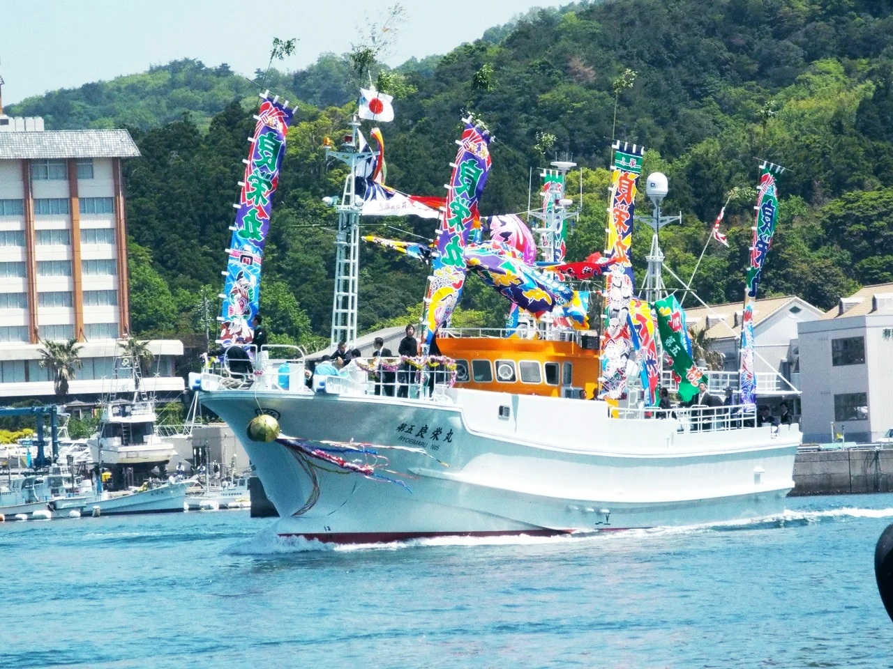
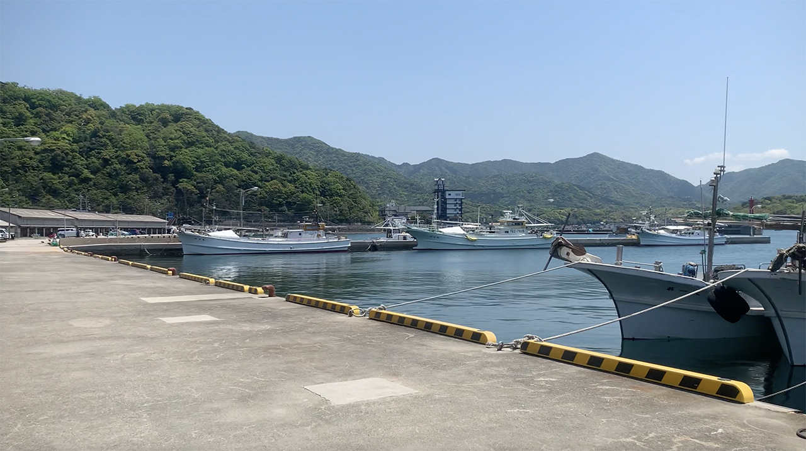
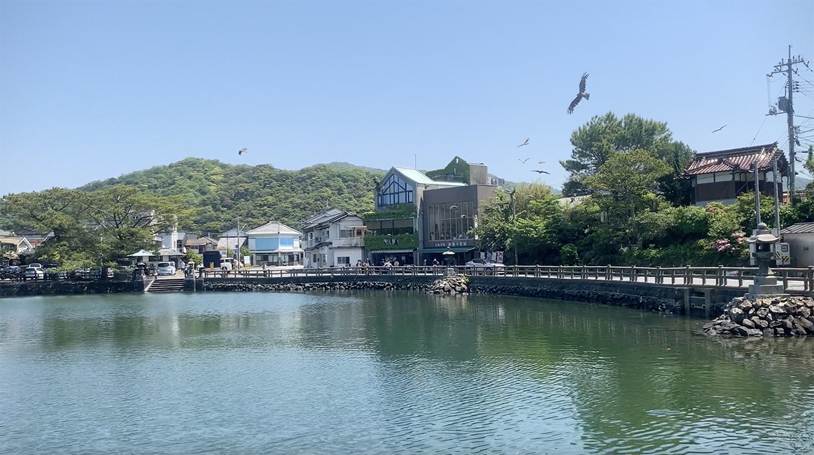
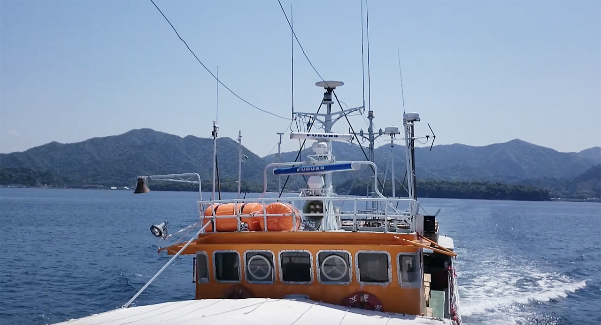
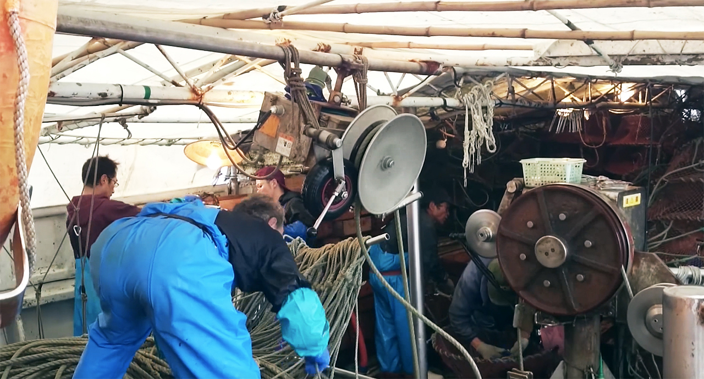
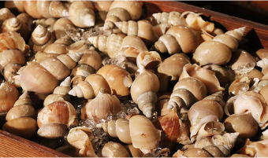
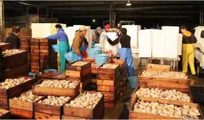
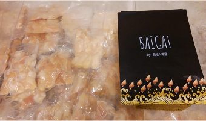
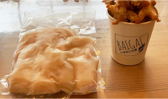

山口県萩市を拠点とする漁船です。
創業70年以上。萩市越ヶ浜地域で漁業を営んでいます。萩市では最後の大型漁船となりましたが、越ヶ浜地域の水産業を支える大きな役割を担っています。

バイ貝の水揚高日本一
漁船総トン数は58t（2020年度現在）にもおよび、高級貝として知られるバイ貝の漁船水揚高はなんと日本一！

生産者ならではのスピードで出荷
水揚げされたバイ貝は、 生産者ならではの最短のスピードで、東京や金沢など全国各地に発送されています。
自社工場で製造した水産加工品を販売。
2019年度には水産加工場を新設し、水揚げされた新鮮な魚介類を加工、販売しています。中でも『バイ貝むき身（生冷凍）』は自慢の逸品です。

バイ貝むき身（生冷凍）
水揚げ直後の鮮度の良いバイ貝を衛生的にむき身加工。急速冷凍することで生鮮品と変わらない味を保った商品です。

【業務用】白バイ貝の唐揚げ用
居酒屋チェーン、大手食品会社へ配送している「白バイ貝の唐揚げを」ご自宅でもすぐに食べれるように致しました。
漁師レストラン「萩池々茶屋」
旨い酒と旨い魚を愛する若手漁師集団が経営する、【漁師直送】をテーマとしたレストラン事業、「萩池々茶屋」を展開しております。新鮮な魚介類をリーズナブルにお召し上がりいただけます。